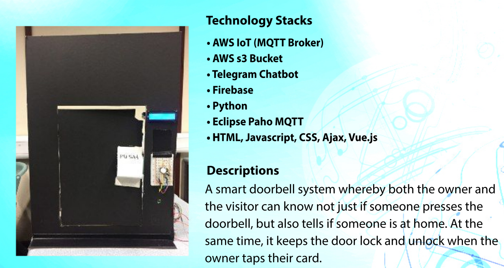

Part of Introduction to VR module Team Project, VR Solar System Class aims at Primary/Secondary students and educate them the order of our Solar System.
Collaborated with teammates and set up Github repository.
Assisted with loading assets for the Unity Project.
Assisted with user evaluation for the project.
Showdown (3D Windows Game, C++ custom engine, Team of 11)
September 2022 - April 2023
Part of Software Engineering Project 5/6 Module, Showdown is a desktop game where an alien invasion has occured. Players will need to enter alien's spaceship and kill all enemies, while retrieveing the cure needed to heal infected humans.
Collaborated in planning the project, as well as addressing concerns regarding the technical requirements.
Linked several systems within the Game Engine such as the Graphics System, Maths and Physics System.
Developed the Graphics System, such as rendering the whole game, loading of assets, shader system.
Performed multiple thorough runs of testing to ensure project is very optimised, and without crashes or
glitches during the gameplay.
QA Leave Application System (PHP Web Application, Team of 5)
March 2023 - April 2023
Part of Mobile and Cloud Computing module Team Project, QA Leave Application allows employees of a company to keep track of their leave balance, as well as to apply for leave.
Collaborated with other team members in planning the project.
Wrote both the web back end and the sever back end using JavaScript and PHP respectively.
Set up the whole Web Application using AWS on Elastic Compute Cloud (EC2) along with the Amazon’s
Relational Database Service (RDS).
Assisted in debugging various issues raised by the team.
Performed thorough testing and Quality Assurance to ensure project is very optimised, error-free and of high
quality.
ASE Singapore E-Appraisal System (C# ASP.NET Web Application, Team of 5)
April 2017 - August 2017
Part of our Final Year Project, we were tasked by the client to came up with an E-Appraisal System for employers to evaluate emloyees.
Wrote the back end of the User Management System with C# ASP.NET as well as its front-end with
HTML/CSS/JavaScript.
Designed the Database Structure, as well as setting up the Database using Microsoft SQL Server.
Maintain connections between the School and Client to ensure that the requirements are met without
compromising quality and efficiency.

IoT Door System (Python/Web Application, Team of 2)
Collaborated in designing and planning the whole project while meeting the school requirements.
Wrote the back end of the project using Python to communicate between the Raspberry Pi and its sensors
attached, as well as to communicate with the front-end of the program.
Performed thorough testing to ensure project is error-free, crash-free while not compromising code quality,
which will be used for school’s showcase.
Yi Qin
Highly motivated third-year Computer Science student. Vastly skilled in program design, documentation and debugging, strong leader skills and team player.